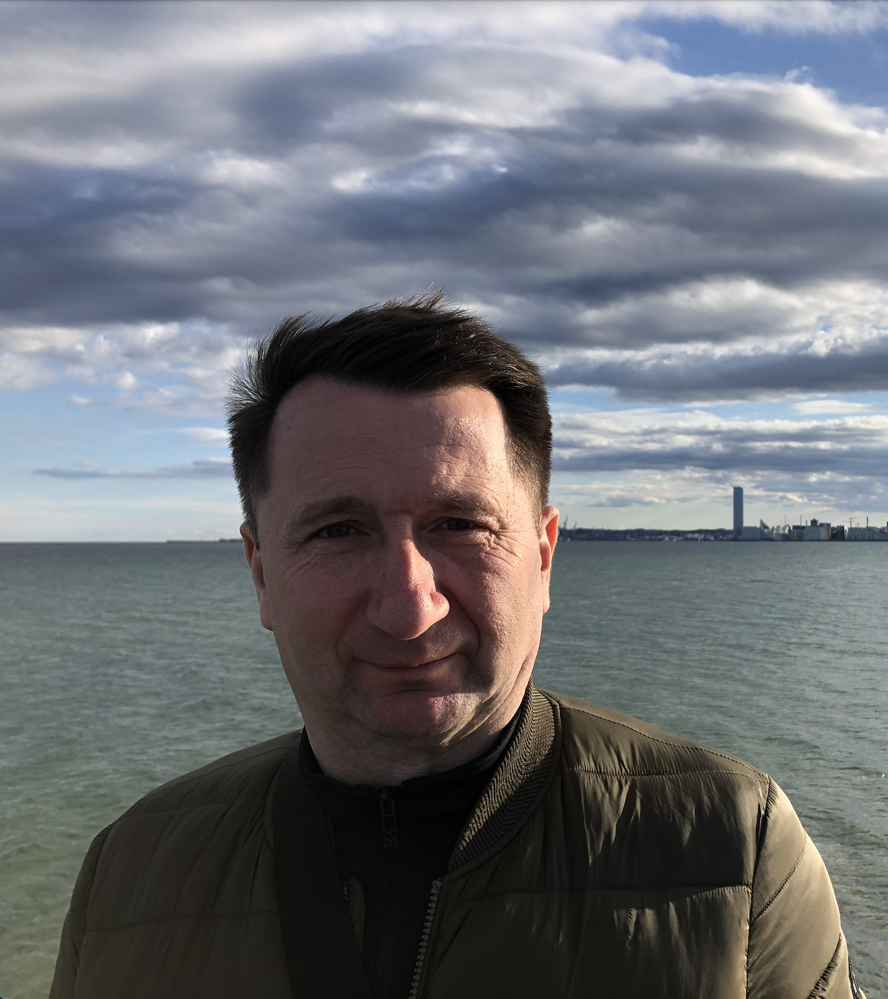
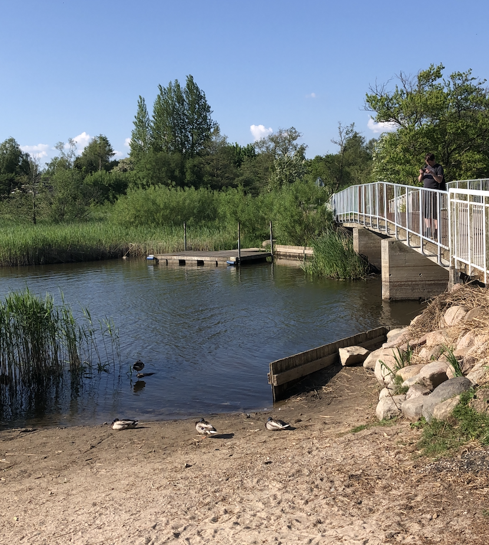
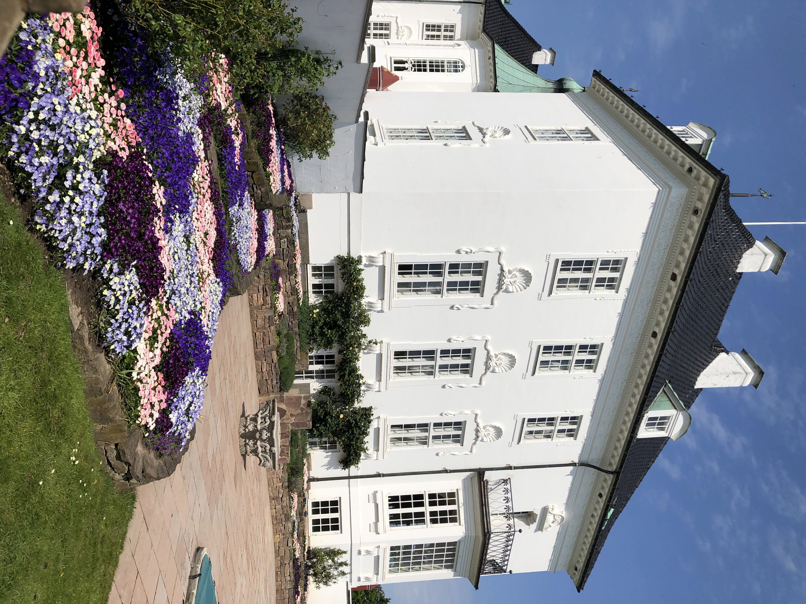

Bellevue Beach
Bellevue Beach is placed in the area of Aarhus calle Risskov, around 4km from the city center. It's a perfect place for a swim in the summer and a long walk in the colder days.
Discover more

Brabrand Lake
Brabrand Lake is a beautiful area full of nature, where you can meet wild animals, birds and take a walk or bike ride in the amazing nature surrounding.
Discover more

Marselisborg Palace
Marselisborg Palace belongs to The Danish Royal Family and is placed by Marselisborg Mindepark in the southern part of Aarhus. The palace is surrounded by beautiful gardens which are open to the public visitors.
Discover more